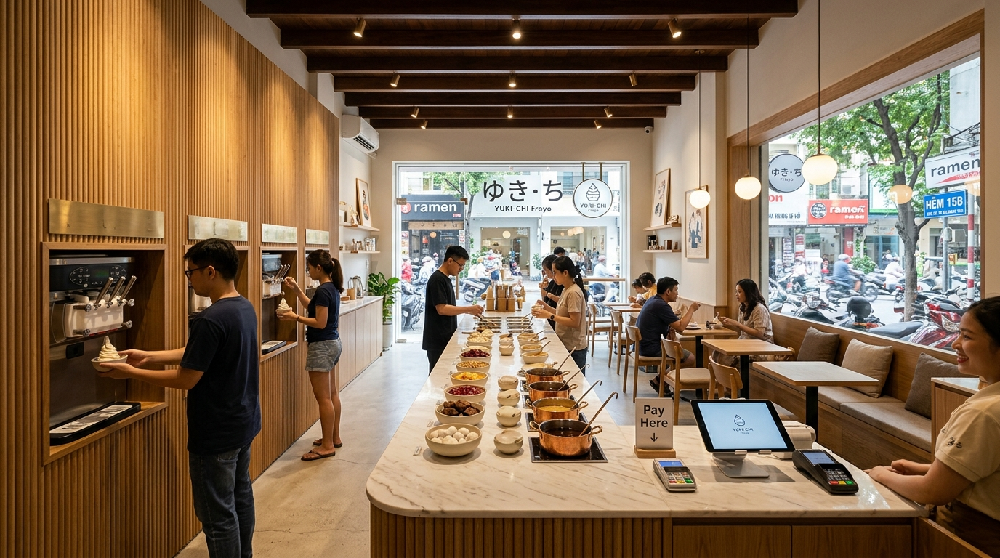
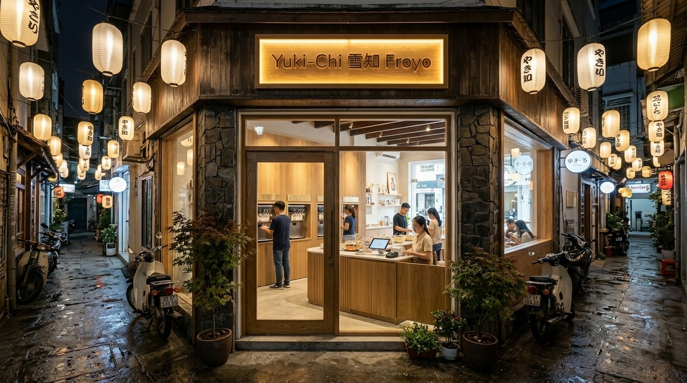

A single-frontage rectangular ground floor optimized for smooth linear customer flow and maximum table turnover in Japan Town (District 1).
One street frontage → Left-wall soft-serve dispensing → Center single continuous marble topping & sauce island → Cashier scale checkout → Right-wall Japandi bench seating.

Floor-to-ceiling glass facade looking onto Japan Town's pedestrian lane (Hem 15B Le Thanh Ton / Thai Van Lung), showcasing the warm interior lighting and linear bar.

4m–5m wide transparent glass facade opening to Japan Town's bustling pedestrian alley, providing high visibility from the street.
Exactly one streamlined Calacatta marble island bar hosting ingredients, heated drizzle wells, and checkout scale at the end.
Integrated wooden bench banquettes along the right side maximize corridor walking space and accommodate 20–26 seats comfortably.